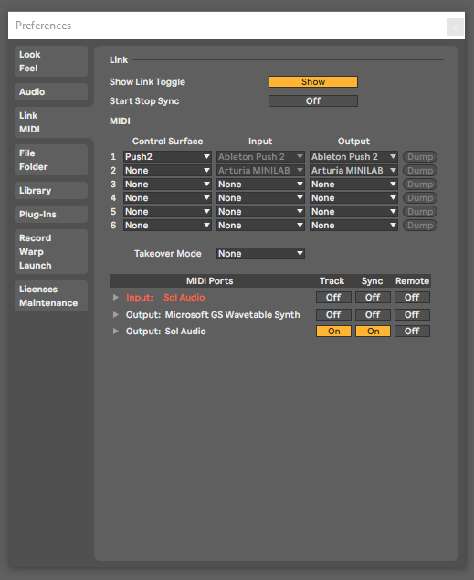
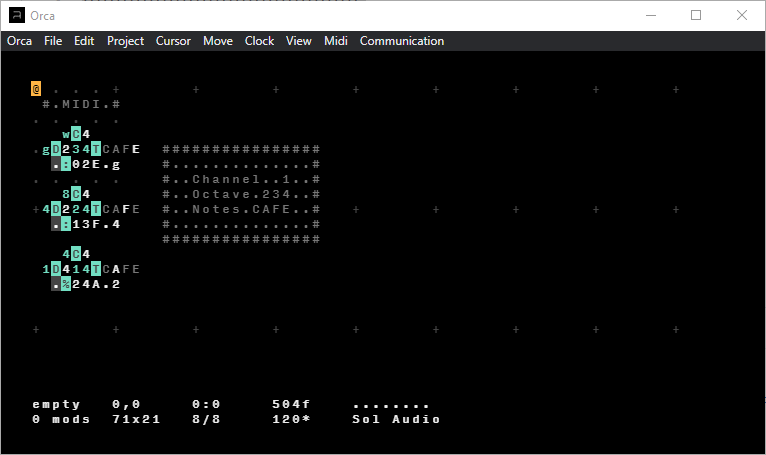
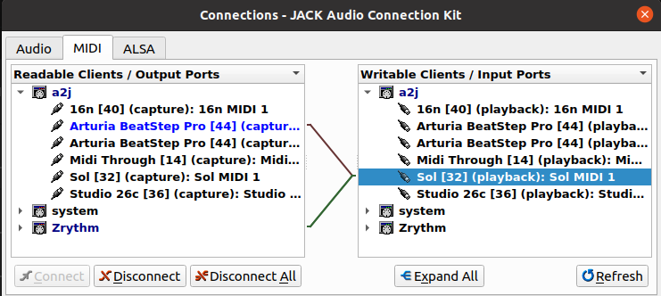
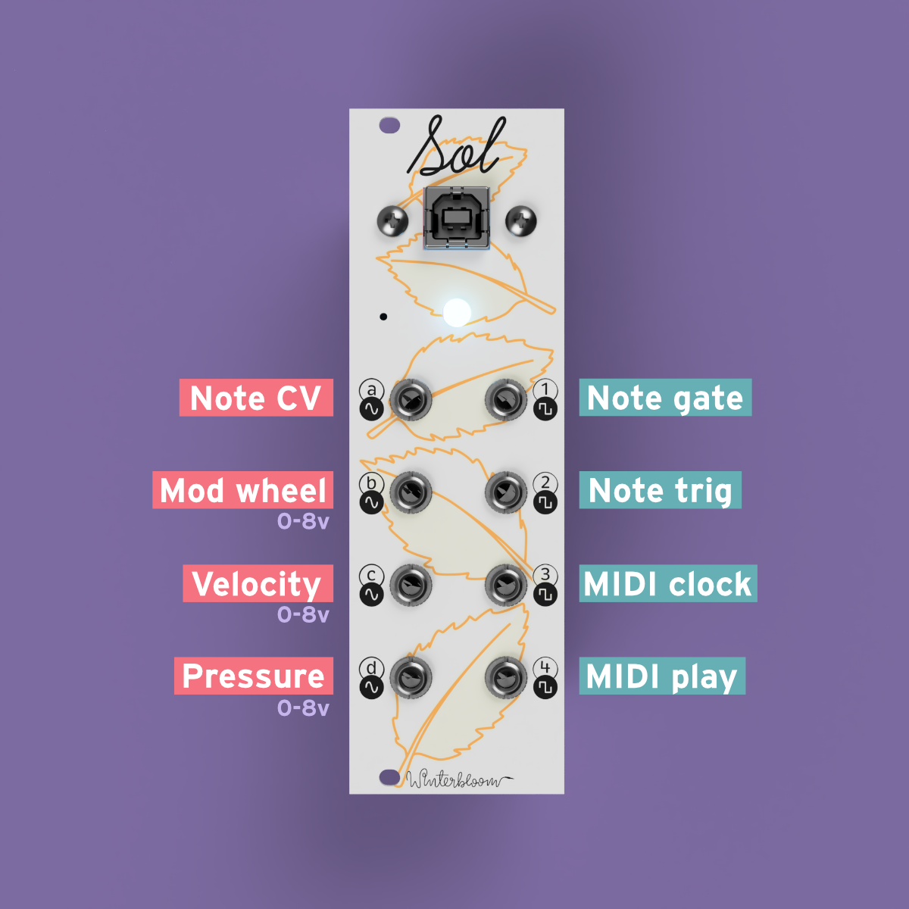
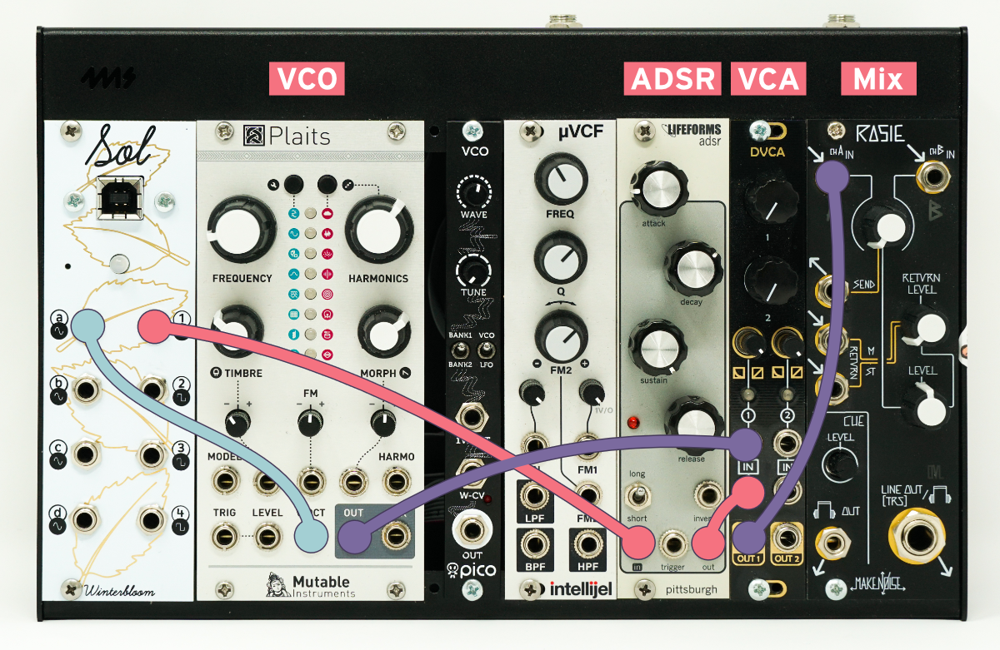
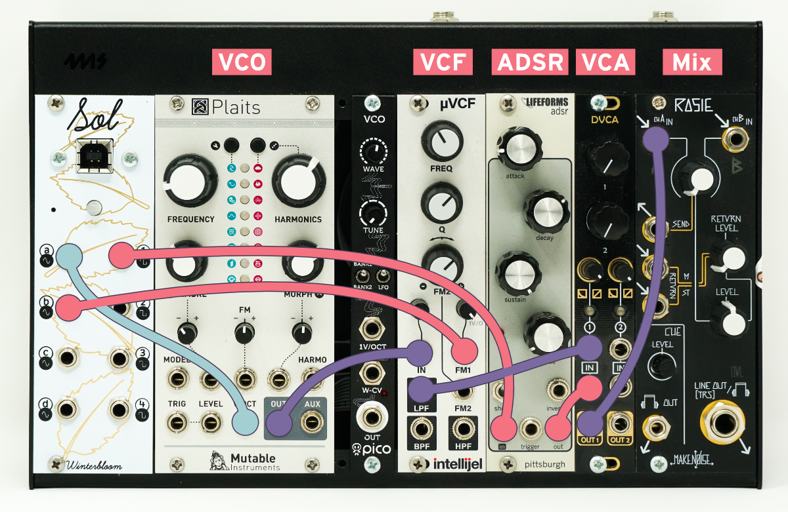

Winterbloom Sol User Guide#
Sol is a uniquely customizable USB MIDI to CV/Gate module. It's designed to be useful right out of the box but flexible enough to accommodate a ton of different CV/Gate generation needs. It's meant to be useful to newcomers, deeply experienced Eurorack enthusiasts, and most in between. With four CV outs and four gate outputs, it can perform all sorts of tasks for your Eurorack synthesizer.
Getting support and help#
We want you to have a wonderful experience with your module. If you need help or run into problems, please reach out to us. Email is the best way for product issues, whereas Discord and GitHub are great for getting advice and help on how to customize your module.
Installing the module#
To install this into your Eurorack setup:
- Connect a Eurorack power cable to your power supply and the back of the module. Note that even though the power connector on the module is keyed, double check that the red stripe is on the side labeled
red stripe! - Screw the module to your rack's rails.
- Connect a USB cable to the USB connector on the front of the module and to your computer.
You should see a drive named CIRCUITPY on your computer at this point. If not, please reach out to us! You should also see a MIDI device named Sol Audio. The LED on the front of the module should temporarily flash yellow and red before turning light blue- light blue means all is well.
Connecting via MIDI#
Once the module is installed and connected to your computer, you should see a MIDI device named Sol Audio. You can use this as a MIDI output in your DAW of choice, but here's some pointers for some common ones:
In Ableton Live, you'll need to enable Track and Sync for Sol Audio output in Preferences > MIDI.

If you don't enable Sync, Live won't send MIDI clock data.
If you're using Orca, it should automatically detect Sol. Make sure the MIDI output device says Sol Audio

Sol works out of the box with JACK on Linux, as an Advanced LSA MIDI device.
If your DAW uses JACK MIDI rather than ALSA MIDI, you will need to install a2jmidid:
$ sudo apt install a2jmidid
Then, enable it in your JACK settings:

Now Sol will appear as a MIDI device under the JACK MIDI panel, and you can easily connect your DAW and other MIDI devices. Sol will still work as an Advanced LSA MIDI device for use with, for instance, ORCA.

Making your first connections#
Sol has eight outputs. Four are continuous CV outputs and the other four are gate/trigger outputs:
- CVs A, B, C, & D: -5 to +8v.
- Gates 1, 2, 3, & 4: Gate/trigger 0 or 5v.
These outputs can be used by the program on the module to serve various functions. The default program uses the outputs as follows:

- CV A: Note pitch (1v/Octave)
- CV B: Mod wheel (0 to 8v)
- CV C: Note velocity (0 to 8v)
- CV D: Channel pressure (0 to 8v)
- Gate 1: Note gate (w/ re-triggering)
- Gate 2: Note trigger
- Gate 3: MIDI transport (high when playing, low when paused/stopped)
- Gate 4: MIDI clock (emits a pulse for every 8th note)
Let's try these out! Connect CV A (the note pitch CV) to the V/Oct input of an oscillator. If you have an ADSR/Envelope generator, connect Gate 1 (the note gate) to its input. If you don't, just connect the output of the oscillator to your output module.

Now, using your DAW of choice, play some MIDI notes. You should see the LED on the front of the module change as it receives MIDI data and it should, of course, make some lovely sounds through your oscillator (and envelope generator, if you have one). Congrats, you've made your first connections! 🎉
If things aren't working right now, reach out! Nothing else in this guide will work if this part isn't working!
Now, if you have a filter, connect your oscillator through the filter and connect CV B (the mod wheel CV) to the filter's frequency CV input.

Now, while playing some notes try using the mod wheel. You should see the mod wheel change the filter frequency. Try it with the other CV outputs as well! CV C is the note velocity and CV D is the channel pressure.
Congrats! You now know how the default program works! 🎉
Modifying the program#
Now that you know the basics it's time to get familiar with customizing the program that's running on Sol.
Sol should show up both as a MIDI output device and a small external drive named CIRCUITPY. In that drive, you should find a file named code.py. Sol runs CircuitPython which means that its firmware is written in the approachable Python programming language and you don't need any special knowledge or compilers to make changes to it. So, open up that file in your favorite text editor, we're going to make some changes!
If you don't have a text editor - that's okay! While you could use Notepad (Windows) or TextEdit (Mac), these can sometimes have issues with CircuitPython devices like Sol. I'd recommend installing Mu if you're new to this whole world. You can read more about editing code for CircuitPython in Adafruit's guide.
In the code.py you should see a line that looks like this:
outputs.cv_a = sol.voct(state)
Modify this line so that it reads:
outputs.cv_a = sol.voct(state) - 1.0
Be careful
Python is whitespace-sensitive. That means tabs and spaces are important! Make sure that you don't accidentally change the indentation level of this line.
This change subtracts 1 volt from the note CV output. So, it should make it sound as if all notes are played one octave lower. Save the file. You should notice the module "reboot" - it may flash green and red for a second but after it should settle back into its idle state with the LED showing a light blue color.
Once it's settled, try playing notes again. You should notice that they're an octave lower.
If you see the module flashing yellow/red, see the section below on finding problems or reach out!
Congrats, you've made your first change to how the module works! 🎉
This might seem like a trivial change (and it is!) but it's meant to show how customization works on this module. You just edit a file and save - there is no need for custom compilers, complicated software, or even experience with programming.
As a next challenge, you can change the mod wheel output (CV B) to be -5v to +5v instead of the default 0 to 8v!
I encourage you to read through the example programs, the various inputs and outputs, the default program, and learn more about CircuitPython so you can get the most of your module. Also, please come chat on the Discord where you can ask questions and see what others are doing with their Sol!
Help! This thing isn't working and it's blinking at me!#
If it's blinking at you that means there's some sort of error in the program. Don't worry, you can get it figured out.
If you connect using the serial console you should be able to see the error. If you don't see it right away, you might need to reset the board (either by pressing the little button on the bottom of the module or power cycling your synth). Sometimes you can press Ctrl+C followed by Ctrl+D in the serial console to get the board to reset and tell you the error.
In any case, reach out on Discord and we can walk you through figuring out what went wrong.
Included example programs#
There are several included example programs to learn from and use. If you want to use these, copy their contents to code.py on the CIRCUITPY drive. Be sure to save it as the correct name, if you don't name it code.py it won't change anything. If you want to restore the original code.py it is here.
- Slew limiter example: Shows how to use a
SlewLimiterto introduce legato. - ADSR example: Shows how to use one of the CV outputs as an ADSR envelope generator.
- Clocks example: Shows how to use the MIDI clock to output trigger pulses at various note markers.
- LFO example: Shows how to use Sol's built in LFO generators.
- Polyphony example: Shows how to use Sol's
Polyhelper to output CV & gate for multiple notes at once. - Random: Shows how to use Sol as a random modulation source.
- The default program: As mentioned above, this handles the basic use case of outputting note CV, note gate, mod wheel CC, and some MIDI clock and transport gates. It's fairly complicated compared to the other examples here, so we recommend starting with some of the other examples as they tend to be a bit easier to digest.
About the state, outputs, and helper functions#
The loop function gets called with three parameters:
lastthe previousstate.statethe current state.outputsthe outputs.
As you get deeper into customizing your module, you might wonder what all is available from the state and output objects in the loop.
The State objects lets you take a look at the MIDI state, it has the following properties:
state.noteandstate.latest_notewhich both give the most recent note played. For example, if middle C was the last note played it will be60. If no note is played, it'll beNone.state.oldest_notegives the oldest note being played.state.lowest_notegives the lowest note being played.state.highest_notegives the highest note being played.state.cc(number)gives the value of the MIDI continuous controller. For example, to get the mod wheel you'd usestate.cc(1). The value is from0.0 - 1.0.state.velocitygives the velocity value of the most recent note. The value is from0.0 - 1.0.state.pressuregives the channel pressure. The value is from0.0 - 1.0.state.pitch_bendgives the pitch bend amount. The value is from0.0 - 1.0.state.playingisTrueif the MIDI transport is playing, and isFalseif it's paused or stopped.state.clockgives the count of MIDI clocks received. There are 24 MIDI clocks per quarter note. Take a look at theshould_trigger_clockhelper function as well.state.clock_frequencygives you the BPM for the MIDI clocks.state.messagegives you direct access to the last MIDI message received (see below).
The Outputs object lets you control the output jacks. It has the following properties:
outputs.cv_a,outputs.cv_b,outputs.cv_c,outputs.cv_dare the CV outputs. You can set it to a number between-5.0and8.0. This is in volts. Settingoutputs.cv_a = 5.0will output 5v on CV A.outputs.set_cv(output, value)sets the given CV output to the given value, just like usingoutputs.cv_aet. al. Callingoutputs.set_cv("a", 5.0)will output 5v on CV A.outputs.gate_1,outputs.gate_2,outputs.gate_3, andoutputs.gate_4are the gate outputs. They can beTrueorFalse. Setting toTruewill output 5v on that gate, setting toFalsewill output 0v on that gate.outputs.set_gate(output, value)sets the given gate output to the given value (TrueorFalse.)outputs.trigger_gate_1(), etc. are helper methods to send trigger pulses through one of the gate. Calling this will cause the gate to beTruefor a short period of time before returning toFalse.outputs.trigger_gate(output)triggers the given gate output just likeoutputs.trigger_gate_1()and friends.outputs.retrigger_gate_1(), etc. are helper methods to "retrigger" one of the gate outputs. Calling this will cause the gate to goFalsefor a short period of time before returning toTrue.outputs.retrigger_gate(output)retriggers the given gate output just likeoutputs.retrigger_gate_1()and friends.
Sol also has several helper methods that can be used for common tasks:
sol.note_to_volts_per_octave(note)returns the volts for a give MIDI note name. For examplesol.note_to_volts_per_octave(60)will give3.0.sol.offset_for_pitchbend(pitch_bend, range)will give a pitch bend volt offset for the given pitch bend value. For example, if you want your pitch bend to give you 1 octave of range up and down, you'd do something likeoutputs.cv_a = sol.note_to_volts_per_octave(state.note) + sol.offset_for_pitchbend(state.pitch_bend, range=1.0)sol.voct(state)combines the above two helpers into one convenient helper that returns a voltage for the given state's note and also takes pitch bend into account.sol.was_key_pressed(state)returnsTrueis a new note was pressed.sol.should_trigger_clock(state, division)returnTrueif the clock matches the note division. For example,sol.should_trigger_clock(state, 1/16)will returnTrueonce for every sixteenth note.sol.map(value, low, high, new_low, new_high): re-maps a value to a different range. For example,sol.map(0.5, 0.0, 1.0, 0.0, 10.0)will return5.0.
The MIDI message object contains just three fields:
message.type, the type of the message. SmolMIDI provides several MIDI message types, such assmolmidi.NOTE_ONandsmolmidi.CC.message.channel, the channel on to which the message is associated, orNoneif not applicable. Note that, unlike in most higher-level MIDI applications, this value is zero-indexed;message.channel == 0means what most applications call channel 1.message.data, a byte array of the data transmitted with the message. For example, aNOTE_ONmessage's data is a single byte representing the note being turned on, which can be used with the note to V/Oct helper:sol.note_to_volts_per_octave(message.data[0]).
Updating the firmware#
Updating the firmware requires two steps: Updating CircuitPython and updating Sol's libraries.
Updating CircuitPython
- Download the latest version of CircuitPython for Winterbloom Sol.
- Place Sol in bootloader mode by pressing the reset button twice quickly. The reset button is located under the panel to the left of the LED. There is a small hole in the panel that you can use a paperclip to press the button if needed. Once in bootloader mode, you should see a drive on your computer named
SOLBOOT. - Copy the
uf2file from step 1 to theSOLBOOTdrive. Sol should restart by itself.
Updating Sol's libraries
- Download the latest release bundle for Sol.
- Unzip the release bundle, and then copy the contents to Sol's
CIRCUITPYdrive, replacing any existing files. - Reboot Sol by power cycling your synthesizer or pressing the reset button again.
Restoring lost calibration#
Sol is calibrated during manufacturing and we keep a copy of your factory calibration in case it gets lost. If your module is in panic mode and says that it has lost its calibration then this can help. Please connect your module via USB, open this page in Chrome, and click the button below. If this doesn't work, please reach out to us.
Warning
This is based on pretty experimental web technology so it might not work the first time. Try it a few times and see if it works, if not, reach out to us.
Frequently asked questions#
Got a question not answered here? Reach out, we'll be happy to help!
Can Sol be used as a MIDI Host? Can I connect a USB MIDI device directly to Sol?
Since Sol is re-programmable and we imagined that most folks would use it attached to a computer, we didn't include this functionality - especially since it would cost more money. However, if you want to go "computerless" you can use a Raspberry Pi as your MIDI host. See here.
Does Sol support MIDI 2.0?
Not yet. We're waiting to get our hands on hardware and software that support MIDI 2.0 so we can add it to Sol. As far as we know, there's no reason we won't be able to add this via a firmware update. If you're interested in helping out, please reach out.
Can Sol output audio on its CV outputs?
Not with the default CircuitPython-based firmware. CircuitPython is designed to be approachable and easy to use, but it comes at the cost of not being as fast as firmware written in C. If you're feeling super brave, Sol is completely open source so you could write your own firmware in C and do whatever you'd like. The hardware uses a DAC that can do 1MSPS, so in theory it could output at audio rate.
Open source hardware & software#
Sol is completely open source and hacking is encouraged.
- The firmware is available under the MIT License.
- The hardware design is available under the CC BY-SA 4.0 License and is designed using KiCAD which is free and open-source. You can open the hardware files using KiCAD or you can check out a PDF of the schematic.
- CircuitPython is available under the MIT License.
 Sol is certified open source hardware.
Sol is certified open source hardware.
Acknowledgments and thanks#
Sol would not be possible without support from the following people:
- Scott Shawcroft
- John Edgar Park
- Scotland Symons
- Echo Harker
- Andi McClure
Sol would also not be possible without the help of the CircuitPython community and Adafruit Industries.